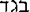

|
| A B C D E F G H I J K L M N O P Q R S T U V W X Y Z |
(, fortune, luck).
A proper name which designates in the Bible, (I), a patriarch; (II), a tribe of Israel; (III), a prophet; (IV), a pagan deity.
A patriarch, to wit, the seventh son of Jacob, and the first by Zelpha, Lia's handmaid. He was born to Jacob in Mesopotamia of Syria (Aram), like his full brother, Aser (Genesis 35:26). On his birth, Lia exclaimed: Happily! () and therefore called his name Gad (Genesis 30:11). The exclamation and the name given thereupon bespeak a real relation between the name of this son of Jacob, and that of the pagan deity which was also called "Gad"; although the exact nature of this relation is variously estimated at the present day. The patriarch Gad begot seven sons (Genesis 46:16). Nothing more is said in Holy Writ concerning him personally.
Tribe of Israel on the east of Jordan, between eastern Manasses on the north, and Ruben on the south. The territorial possessions of the descendants of Gad cannot be given with perfect exactness. On the west, the portion of Gad abutted on the Jordan, and ran up the Arabah or Jordan valley, in a narrow strip, from the northern end of the Dead Sea to the southern extremity of the lake of Genesareth; but on the other three sides, its boundaries cannot be described with equal certainty. Thus, on the east, the Bible assigns to Gad no distinct limit. On the north, it gives, in one place (Deuteronomy 3:16), the river Jeboc as the extreme limit of that tribe, while, in two other places (Joshua 13:26, 30), it treats as such the locality of Manaim (Heb. Mahanaim) which was to the north of the Jeboc. In like manner, on the south, the sacred text represents in Joshua 13:15 sqq., as the boundary between Gad and Ruben, a straight line drawn eastwards from the Jordan and passing exactly northward of Hesebon, a town which it ascribes to Ruben; whereas, it assigns elsewhere (Numbers 32:34 sqq.; Joshua 21:37), to Ruben several towns north of Hesebon, and to Gad, the very town of Hesebon. From these apparently conflicting biblical data it is natural to infer that the extent of the tribe of Gad varied at different times in Hebrew history, and to consider as simply conventional the definite limits ascribed to Gad on the ordinary maps of Palestine divided among the twelve tribes of Israel. The following are the principal towns mentioned in Joshua 13:25 sqq. and Numbers 32:34-36, as belonging to the descendants of Gad: Jaser, Ramoth, Masphe, Betonim, Manaim, Betharan, Bethnemra, Socoth, Saphon, Jegbaa, Etroth, Sophan. During the journey through the wilderness, the tribe of Gad counted upwards of 40,000 men and marched with Ruben and Simeon on the south side of Israel. Allowed by Moses to settle on the east side of the Jordan, on condition of aiding in the conquest of western Palestine, the Gadites complied with that condition, took possession of the territory which they had desired as favourable to pastoral pursuits, and formed for centuries the most important Israelite tribe beyond Jordan. They were a warlike race whose valour is highly praised in the parting blessing of Moses (Deuteronomy 33:20, 21) and in the prophecy of Jacob (Genesis 49:19), and were able to hold their own in the raids made against them, chiefly by the children of Ammon. Upon the disruption of Solomon's empire, they formed a part of the northern kingdom, and shared with varying success in the subsequent wars against northern Israel. Their name appears on the Moabite stone (line 10). They were carried into captivity at the same time as the other tribes beyond Jordan by Teglathphalasar (734 B.C.), and in the time of the prophet Jeremias their cities were inhabited by the Ammonites. Their territory comprised the land of Galaad, the fertility and beauty of which are still praised by eastern travellers.
A Hebrew prophet, contemporary with King David. He came to that prince when the latter was hiding in the cave of Odollam (1 Samuel 22:5), and was probably one of the Gadites who joined David there (1 Chronicles 12:8). He then began under God's guidance his career of counsellor, which eventually won him the name of "the seer of David" (2 Samuel 24:11; 1 Chronicles 21:9). Gad announced to the king the divine punishment for numbering the people, and advised him to erect an altar to God on Ornan's threshing-floor (2 Samuel 24:11 sqq.; 1 Chronicles 21:9 sqq.). He is referred to as the author of a book narrating part of David's reign (1 Chronicles 29:29) and as having assisted that king in arranging the musical services of the House of the Lord (2 Chronicles 29:25).
A pagan divinity explicitly mentioned in Isaiah 65:11, where the Hebrew name , "Gad", is rightly rendered "Fortune" in the Vulgate. As far as is known in the present day, Gad is a word of Chanaanite origin, which, long before the passage of Isaias just referred to was written, had, from a mere appellative, become the proper name of a deity. Biblical testimony to the ancient worship of Gad in Chanaan is certainly found in the names of such places as Baalgad (Joshua 11:17; 12:7; 13:5) and Maglalgad "tower of Gad" (Joshua 15:37). A trace of Gad's worship in Syria may perhaps be found in Lia's exclamation "begad" on the birth of her first son when she also called "Gad" (Genesis 30:11); this was admitted of old by St. Augustine (Quæstiones in Heptateuchum, in P.L., XXXIV, col. 571), and at a much more recent date by Dom Calmet, in his Commentary on Genesis.
APA citation. (1909). Gad. In The Catholic Encyclopedia. New York: Robert Appleton Company. Retrieved April 26, 2010 from New Advent: http://www.newadvent.org/cathen/06331b.htm
MLA citation. "Gad." The Catholic Encyclopedia. Vol. 6. New York: Robert Appleton Company, 1909. 26 Apr. 2010 <http://www.newadvent.org/cathen/06331b.htm>.
Transcription. This article was transcribed for New Advent by WGKofron. With thanks to Fr. John Hilkert, Akron, Ohio.
Ecclesiastical approbation. Nihil Obstat. September 1, 1909. Remy Lafort, Censor. Imprimatur. +John M. Farley, Archbishop of New York.
Contact information. The editor of New Advent is Kevin Knight. My email address is webmaster at newadvent.org. (To help fight spam, this address might change occasionally.) Regrettably, I can't reply to every letter, but I greatly appreciate your feedback — especially notifications about typographical errors and inappropriate ads.